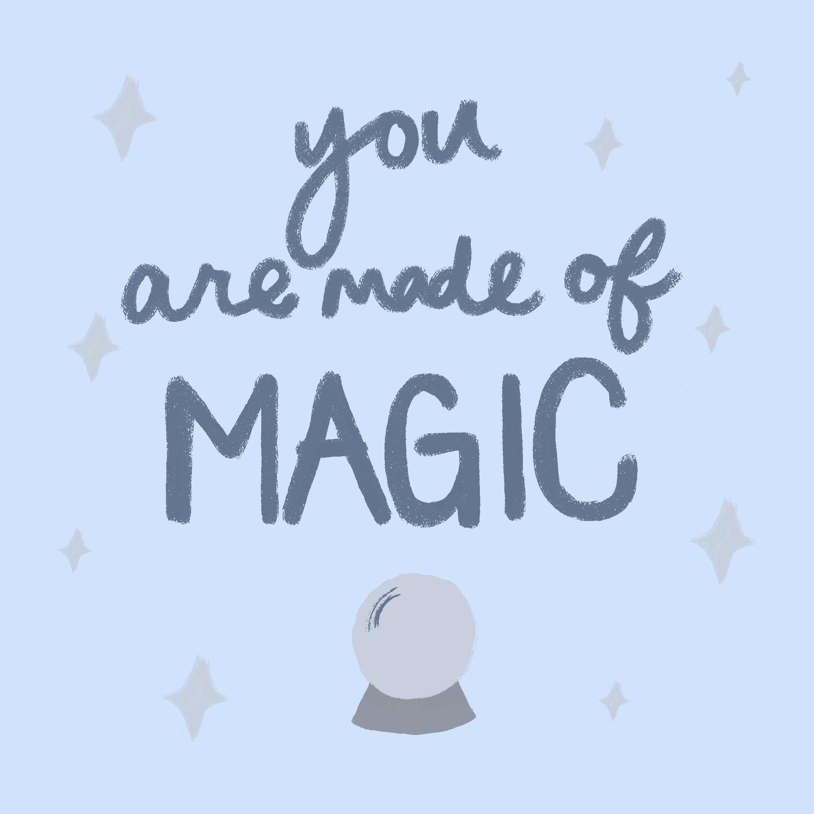
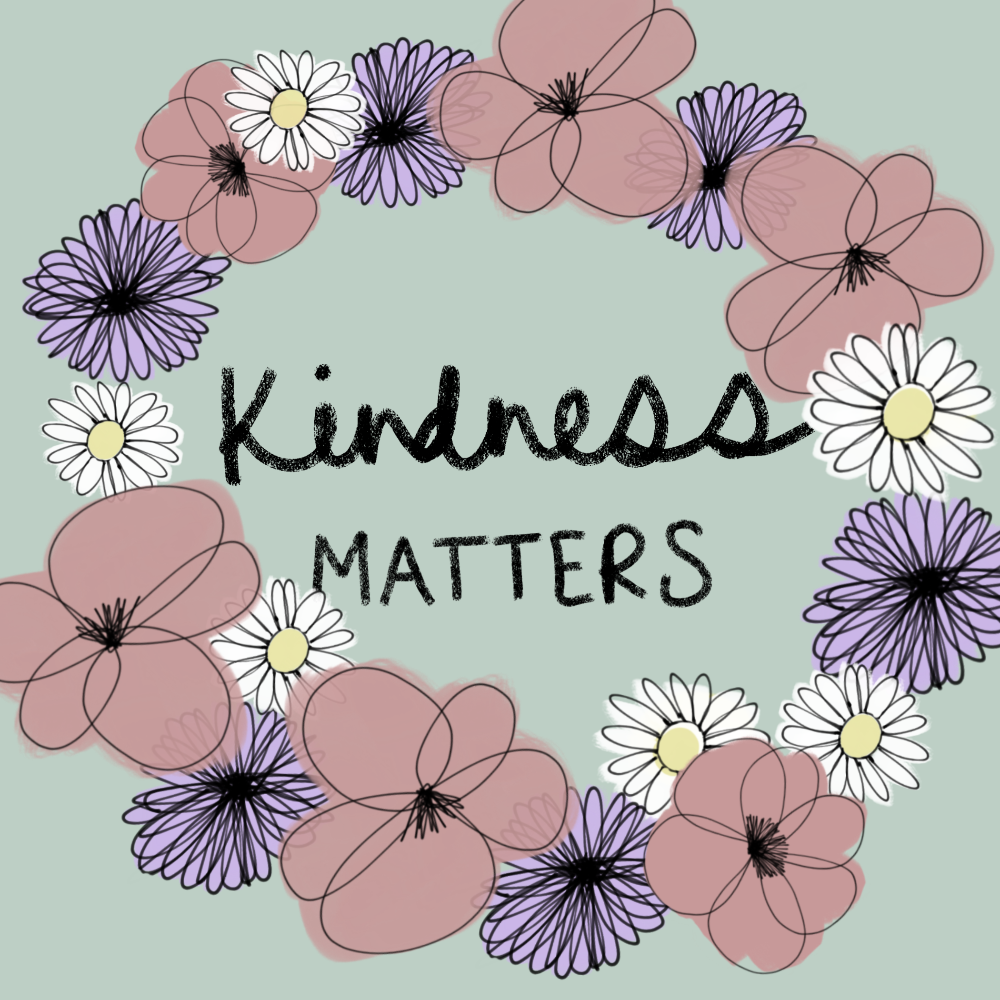
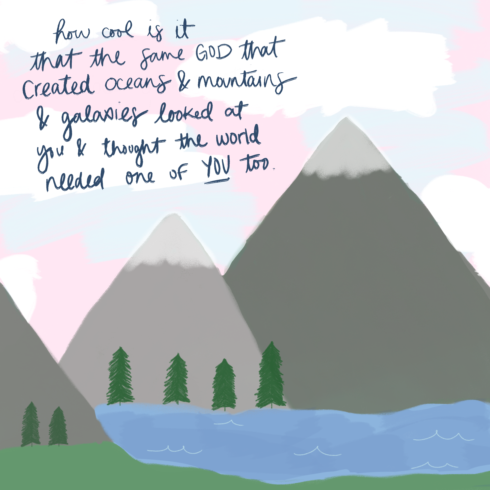
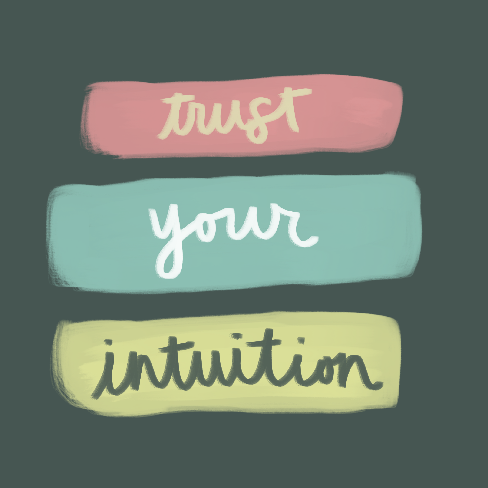

digital illustrations
The following illustrations were created using Adobe Fresco. I have not had much experience completing illustrations completely digitally, but these were very fun to make. The inspirations behind these illustrations are some of my favorite brands and creators, such as Natural Life and Morgan Harper Nichols.
I enjoy creating art that involves bright + pastel colors. These colors inspire me to think positively and creatively. Overall, these illustrations are meant to convey feelings of happiness, hope, and positivity. I hope to create art that makes the people viewing it happy and inspired.



